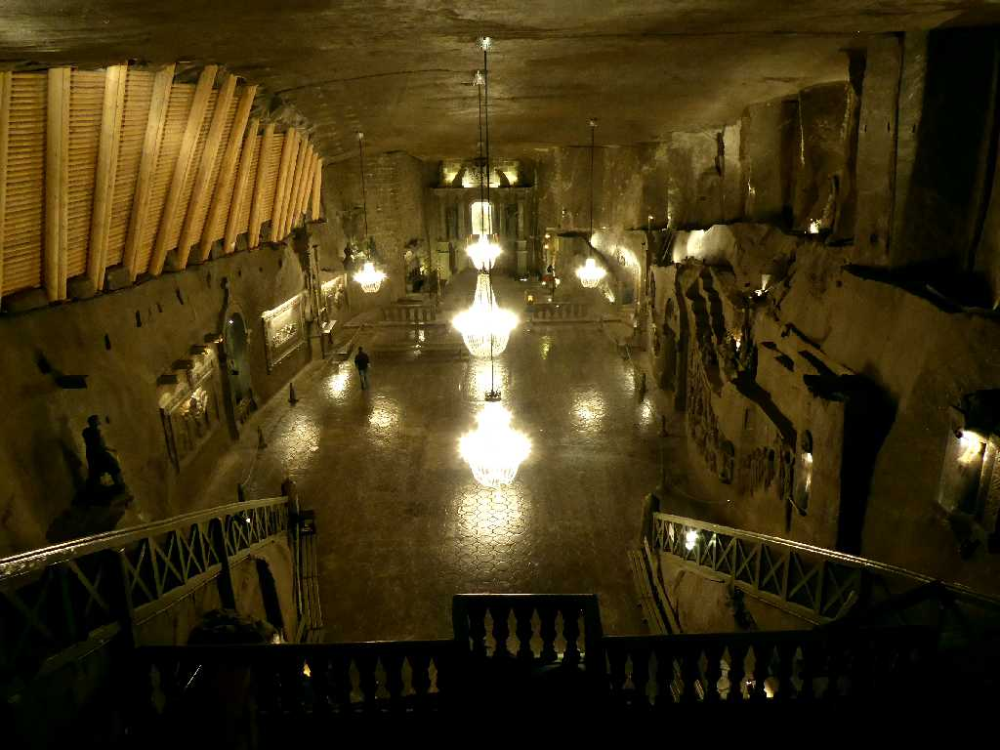
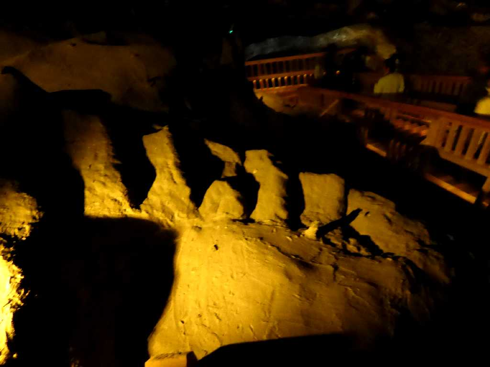
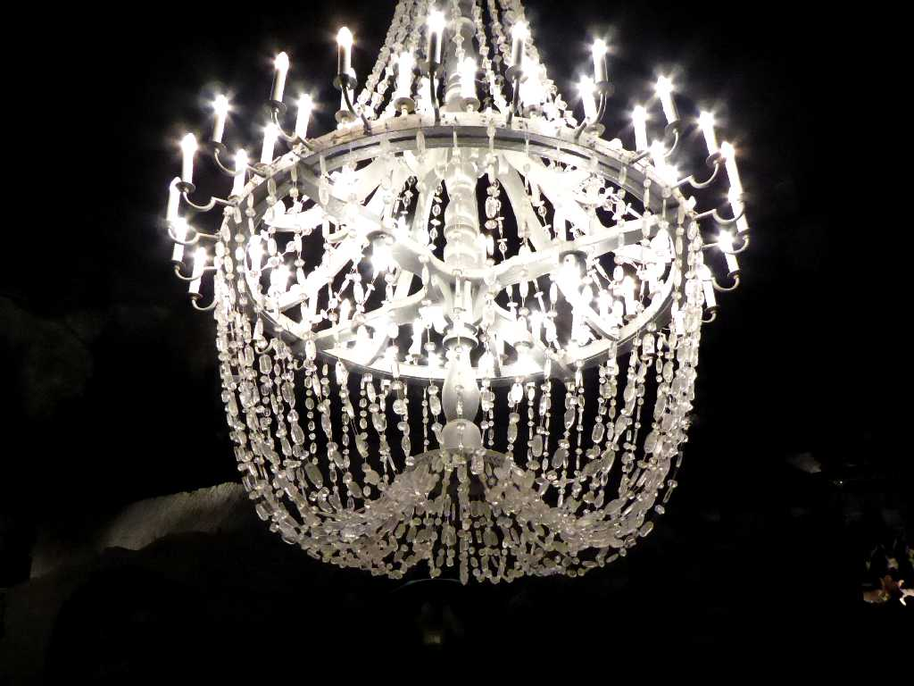
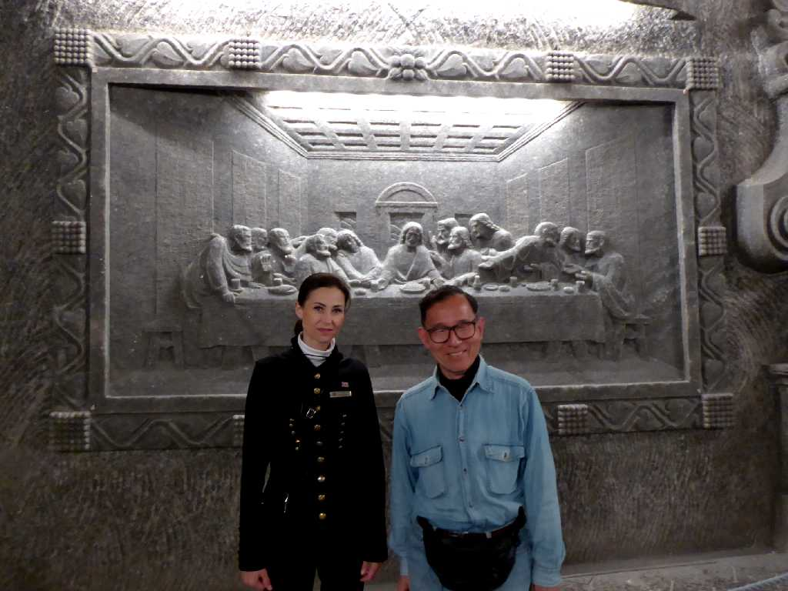

Kaplica Św. Kingi Kopalnia soli Wieliczka
１０４４年創業し廃坑になっていない世界最古のヴィエリチカ岩塩坑は深さ３２７ｍ坑道長約３００kmにおよぶ

Schody Kopalnia soli Wieliczka
旧坑道内の階段

Żyrandol Kaplica Św. Kingi
塩の結晶で輝く美しいシャンデリア

May 31 2019 Kopalnia soli Wieliczka
チャペル内にある塩でできた最後の晩餐